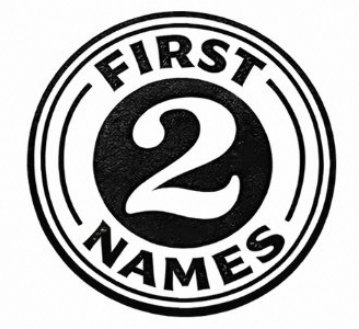
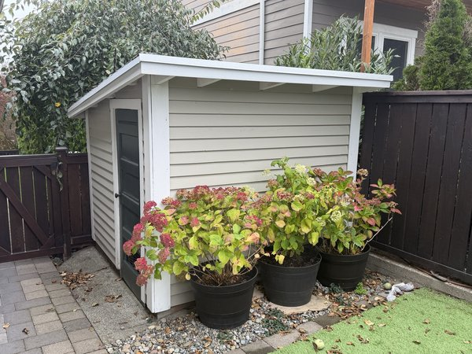

Two First Names · One Workshop

Giving old
tools a
second life.
Vintage hand planes, wooden-handled screwdrivers, and forgotten workshop finds — documented, restored, and preserved.
Making plans to tear down the backyard shed and rebuild it into a proper — if still pretty small, but mighty — workshop. Documenting the whole thing.

Recent Work
Bulat Damascus Chef’s Knife Handle Refresh
A Kickstarter-era Canadian Damascus chef’s knife, wooden handles refreshed with 180–220 grit sanding and three coats of Walrus Oil, finished with Renaissance Wax.
Read the full write-up →Imperial Steak Knife Handle Refresh
Seven Imperial steak knives with bone-dry beech handles — CA glue for the checks, sanding through 220 grit, three coats of Walrus Oil.
Read the full write-up →Bridgeport H.M. Corp Interchangeable Tool Handle
A $34.95 eBay find — vintage American multi-tool with eight interchangeable bits and a rosewood handle brought back to life.
Read the full write-up →Vintage Awl — Repurposed Marking Knife
A $10 Facebook Marketplace find converted into a precision marking knife. Rosewood handle, brass ferrules, flat bevel reground on diamond stones.
Read the full write-up →Dave Corinth's Chip Breaker Screwdriver
O1 steel blade, brass ferrule, Brazilian Rosewood donor knob. Built from Dave's kit — one tool, one job, done perfectly.
View build →German "Perfect Handle" Set — Four Sizes
Four graduating German cabinet screwdrivers. Metalwork reshaped, wood scales sanded and finished with Walrus Oil — Renaissance Wax to follow.
Read the full write-up →Mac Tools Wooden-Handled Set
Post-WWII American 7-piece set. Fiebing's leather dye, polymerized tung oil, shellac, and Renaissance Wax — richer than new.
Read the full write-up →The shop, the tools, and why it matters.
There's something about a 100-year-old hand plane that still works perfectly — maybe better than anything made today. I restore vintage hand tools not because they're antiques, but because they're genuinely good tools that deserve to be used.
Each restoration is documented here: where the tool came from, what it needed, and what it looks like when it's ready to work again.
Explore the Site
The full gallery — every tool documented with before, during, and after photography.
The consumables and chemicals I actually use in the shop, with honest notes on each.
The YouTube channels and websites that taught me most of what I know about hand tool woodworking.
36 podcasts curated for long hours at the bench. Something for every mood and project phase.
Mac Tools 7-Piece Wooden-Handle Set
A $40 eBay gamble, a 3-phase Fiebing's dye process, and the Phillips head screwdrivers that don't exist — until they do.
When a tool is done, I write it up.
No cadence, no schedule — just the occasional restoration story when I have something worth saying. Drop your email below and you'll get it when it lands.
View past issues · Powered by Buttondown